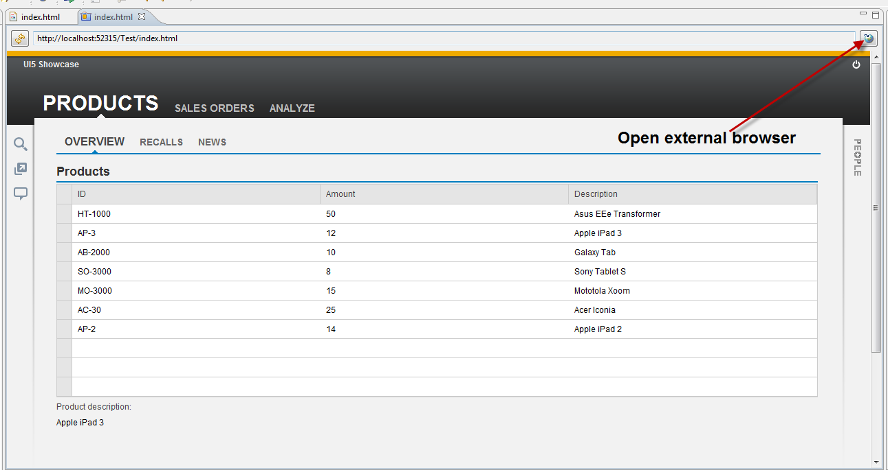
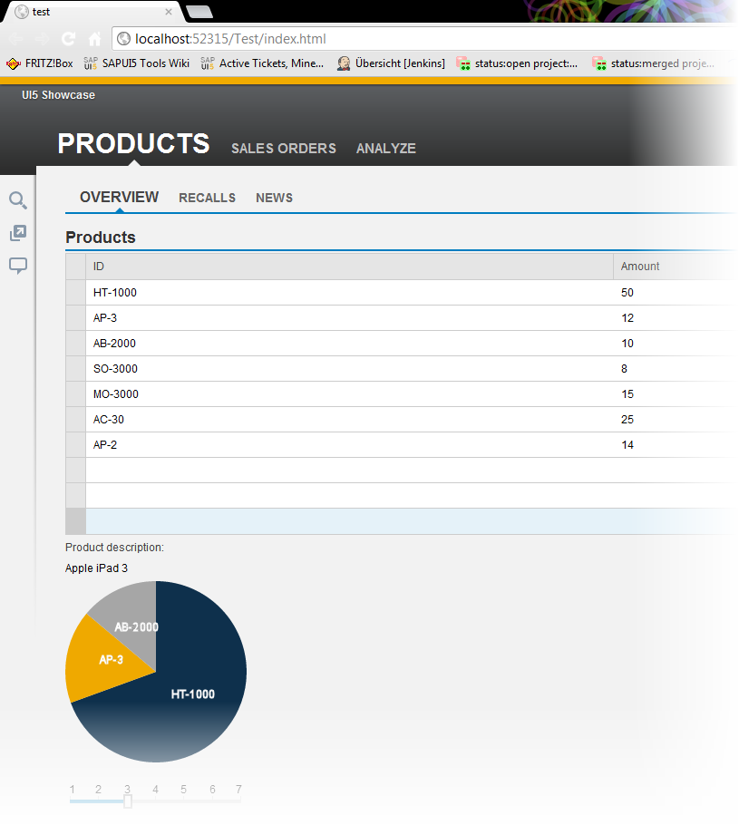

SAPUI5 Snippets
SAPUI5 snippets are templates and examples on how to use the SAPUI5 runtime and controls.
Context
You can add SAPUI5-specific code parts, so called SAPUI5snippets. SAPUI5 snippets are available as prepared HTML pages with no separation between model, view and, controller (MVC). They are generated during startup of the Eclipse runtime.
Procedure
-
To open the Snippets view, proceed as follows:
-
Choose
 Window
Window  Show View Other...
Show View Other... .
.
-
In the Show View dialog, choose General Snippets, and confirm you selection with Open.
The Snippet view opens.

-
Choose
-
To insert a snippet, proceed as follows:
-
Open the index.html of your application project in the HTML editor.

-
To insert the snippet code, double click the snippet, or use drag&drop.

-
Save the code, and run it in the integrated browser.

-
Open the index.html of your application project in the HTML editor.
Results
The page should then be displayed correctly:
